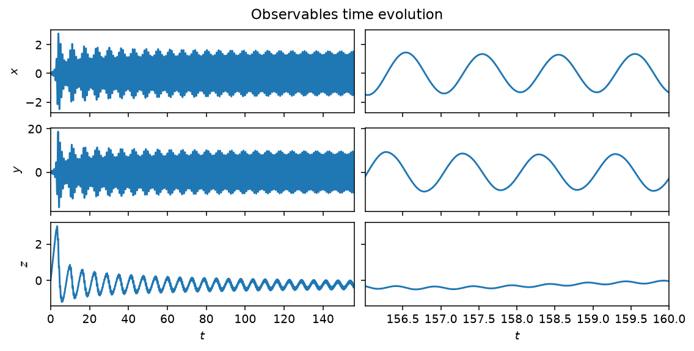
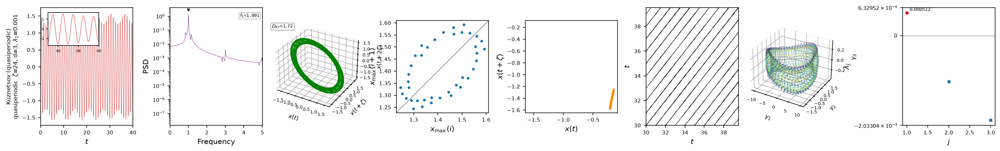

Kuznetsov oscillator
The Kuznetsov oscillator is a simple autonomous generator of quasiperiodic motion: a three-dimensional system that produces periodic, quasiperiodic and chaotic behaviour depending on \((\lambda, \omega_0, \mu)\),
Unlike the Lorenz63 system, which is chaotic at its classical parameters, the Kuznetsov oscillator's class defaults (\(\lambda=0\), \(\omega_0=2\pi\), \(\mu=1\)) sit on a two-frequency quasiperiodic torus, which makes it a useful counter-example when testing whether a chaos-classification method (positive Lyapunov exponent, broadband spectrum) correctly abstains on a non-chaotic attractor.

Time evolution of \(x\), \(y\) and \(z\) at the class defaults, past the initial transient. Left: the full run, settling onto the quasiperiodic torus. Right: the last four characteristic times, showing the faster of the two incommensurate frequencies.
Quickstart
from dynamodels.physical import Kuznetsov
model = Kuznetsov(lam=0., omega0=2 * 3.14159, mu=1., dt=0.01)
psi, t = model.time_integrate(Nt=16000)
model.update_history(psi, t)
model.visualize_observable_hist()
model.close()
Nonlinear diagnostics

Diagnostics from ntsa.characterize, left to right: the
observable time series with a zoomed inset; power spectral density, with two
incommensurate peaks; the 3-D delay-embedded portrait, a torus rather than a
fractal attractor; the first-return map and Poincare section, closed curves
rather than point clouds; a recurrence plot; a 3-D classical-MDS embedding;
and a near-zero leading Lyapunov exponent — quasiperiodic, not chaotic,
despite the broadband-looking time series.
Reference
Kuznetsov, A. P., Kuznetsov, S. P., & Stankevich, N. V. (2010). A simple autonomous quasiperiodic self-oscillator. Communications in Nonlinear Science and Numerical Simulation, 15(6), 1676-1681. doi:10.1016/j.cnsns.2009.06.027
API
dynamodels.physical.kuznetsov.Kuznetsov
Bases: Model
Kuznetsov oscillator — autonomous generator of quasiperiodic oscillations.
Three-dimensional system displaying periodic, quasiperiodic and chaotic behaviour as a function of the parameters \([\lambda, \omega_0, \mu]\):
With the default parameters (\(\lambda = 0\), \(\omega_0 = 2\pi\), \(\mu = 1\)) the attractor is a two-frequency quasiperiodic torus.
References
Kuznetsov, Kuznetsov & Stankevich (2010). A simple autonomous quasiperiodic self-oscillator. Commun. Nonlinear Sci. Numer. Simul., 15, 1676–1681. DOI: 10.1016/j.cnsns.2009.06.027.
Source code in dynamodels/physical/kuznetsov.py
8 9 10 11 12 13 14 15 16 17 18 19 20 21 22 23 24 25 26 27 28 29 30 31 32 33 34 35 36 37 38 39 40 41 42 43 44 45 46 47 48 49 50 51 52 53 54 55 56 57 58 59 60 61 62 63 64 65 66 67 | |